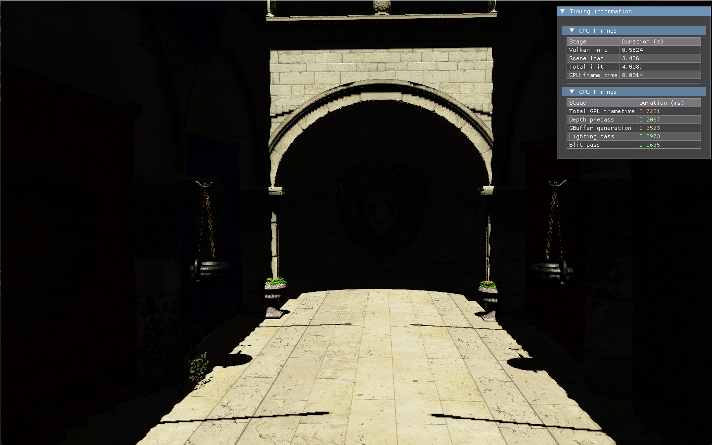

Oleksandr Hlebov
C++ programmer and game developer with a passion for graphics programming. Based in Deinze, Belgium.
Projects

Team of 6, developed in Unreal Engine 5. Worked on core gameplay: throwing objects and world interactions, collection zones, fragile objects using the UE5 Chaos destruction system, custom physics overrides for character/object interaction, and animation programming (blueprints, blending, montages, C++ multicast-delegate triggers).

Team of 8 in Unreal Engine 5, each member assigned their own tasks. Implemented puzzles, point-and-click movement and environment interactions, "possessing" different playable entities, and worked with UE5 cinematic cameras.

An improved version of a renderer built for college, learning from earlier mistakes. Built on own vulkan-classes library, fetched automatically through CMake. Intended as a base project for further Vulkan research.
A Vulkan API wrapper library built using modern C++20, wrapping vk-bootstrap and VulkanMemoryAllocator. Uses a builder pattern for creating Vulkan handles and manages object lifetimes automatically with deletion queues.
Individual research implementing and abstracting a Logistic Regression model in modern C++, using mathematical formulas and troop attributes to make an educated guess on which army would win a battle.